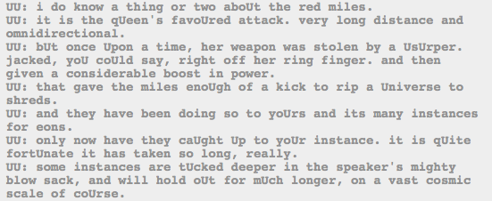

All of the instances are held in the same genesis frog, huh? Interesting! So the alpha kids’ instance is going to last juuuuust long enough to let them get into the medium, looks like.
And the Condesce is making sure of that, pushing the kids to get out ASAP. Seems like her interests might be sliiiiiightly more in their favor.